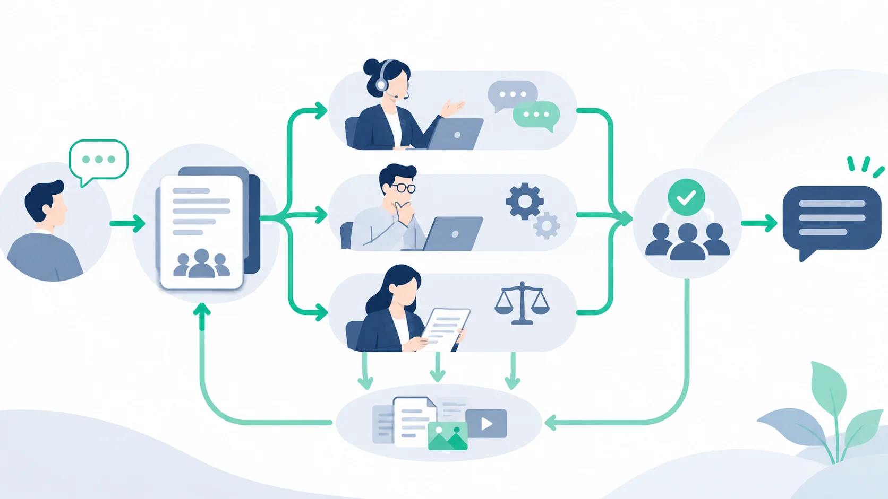

Article · 飞函
Article · 飞函
客户投诉跨部门协查：如何留住同一条处理脉络
客户说同一个故障反复出现。客服已向客户承诺反馈时间，技术正在排查日志，法务则需要确认回复措辞和材料范围。三个部门都在行动，如果各自保存一份经过转述的情况，到了回复客户时，就可能出现故障时间、影响范围和处理结论对不上的问题。
跨部门协查的关键，是让每一次判断都能回到同一组事实：客户原始诉求是什么、谁核实了什么、哪些结论仍待确认、最终依据哪一版材料作出回复。
先建立一条共同的处理主线
客服受理后，先给投诉一个统一编号，记录客户原话、发生时间、涉及业务、已知影响和约定的反馈节点。随后围绕该编号发起协查，明确客服负责对外沟通，技术负责事实排查，法务负责审核需要法律判断的表述与材料。
协查沟通可以集中进行，但关键结论不能只留在零散聊天里。每次进展至少写清四件事：新事实、核实人、证据位置、下一步负责人及时间。例如，技术发现异常日志时，应说明日志对应的时间段、能支持什么判断，以及尚不能排除什么原因。客服据此更新客户反馈，避免把排查假设说成确定结论。

让材料和结论保持对应
投诉协查常涉及工单截图、运行日志、合同条款或客户往来记录。材料若在多个群和个人文件夹中反复转发，后续很难判断哪份是原件、哪份已经更新。可按投诉编号设置统一的材料位置，保留来源、上传时间和版本说明；在处理记录中引用材料名称及版本，而不是仅写“见附件”。
访问范围也应随职责划定。技术人员需要排查所需的日志，法务需要审核相关条款与对外表述，客服需要能够准确转述的结论；并非每个人都需要拿到全部原始材料。遇到包含个人信息或商业敏感内容的文件，先确定必要的共享范围，再传递材料。
对外回复前，做一次共同核对
在约定反馈时间前，由客服汇总拟回复内容，技术确认事实和处理进度，法务核对需要审查的措辞。三方共同核对投诉编号、事实时间线、证据版本、已完成措施和仍待处理事项。若结论发生变化，记录变化原因和确认人，让后续接手者知道为何修改。
飞函的即时通讯、历史消息同步与全局搜索，可用于承接协查沟通和查找此前讨论；网盘共享空间及按成员或部门分配权限的能力，可用于组织协查材料。实际落地时，仍需要团队约定编号、记录格式、材料命名和回复确认流程。工具帮助信息留在可查找的位置，统一的工作约定则决定这些信息能否串成完整的处理脉络。
投诉结案时，除保存最终回复，还应留下未解决事项、后续责任人和再次联系客户的条件。这样，即使客服换班或问题再次出现，接手者也能沿着事实、材料和决定继续处理。